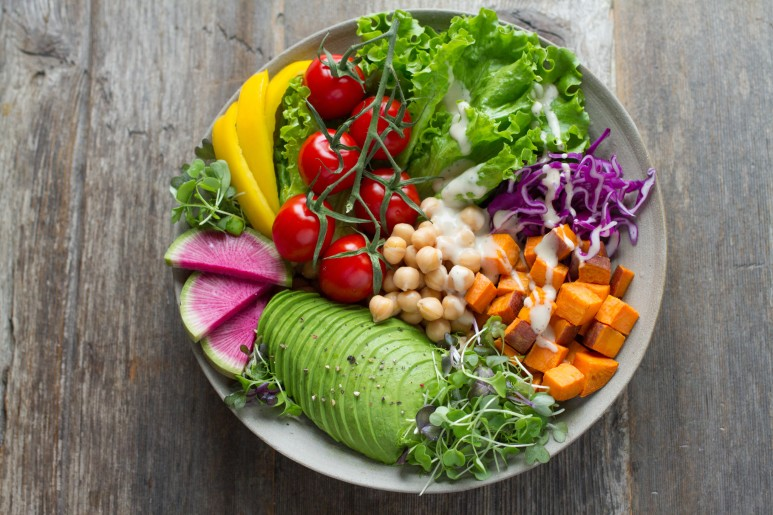
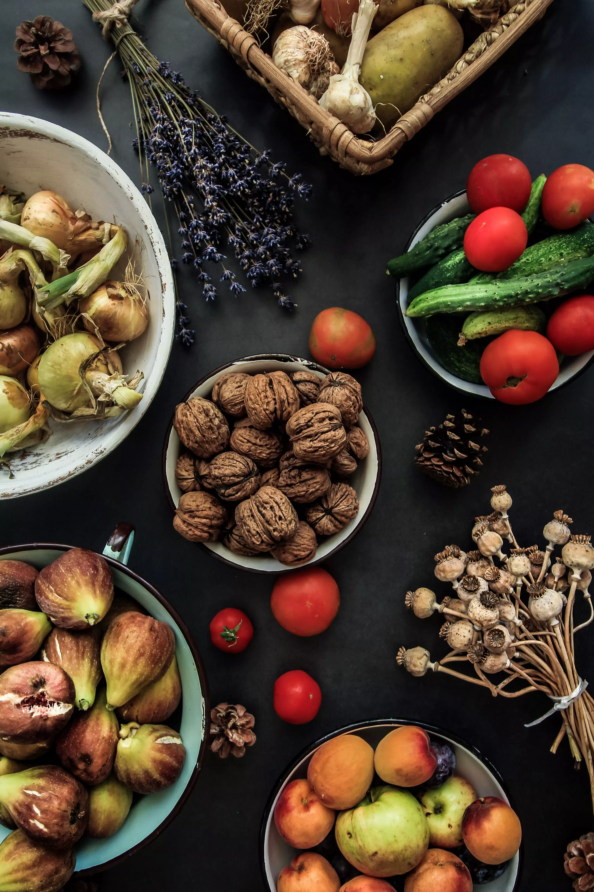

QR Code
Add by Contacts
Add by ID
Invite
Recommended Friends
You have no recommended friends.Open Chat
Go to Openchat Home현재를 환영하라 (마음공부 수행)
#마음공부#마음수행#수행#명상#시크릿#끌어당김#내려놓음#무의식정화
239 members
채식공감 비건/자연식물식을 지향하는 사람들의 모임
#채식#비건#자연식물식#건강#환경#동물#유기농#친화경

247 members

158